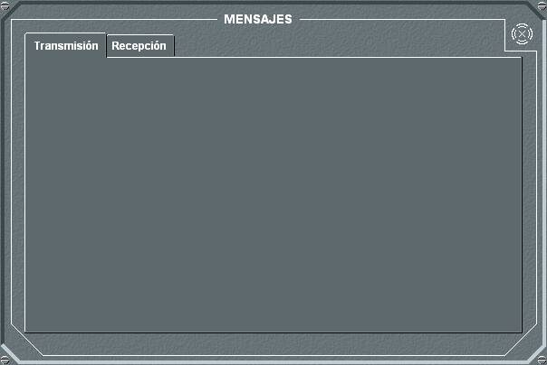
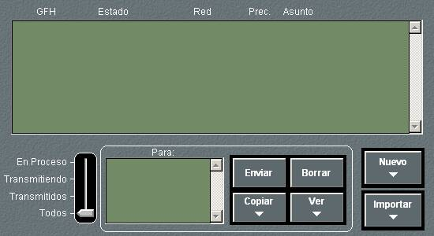
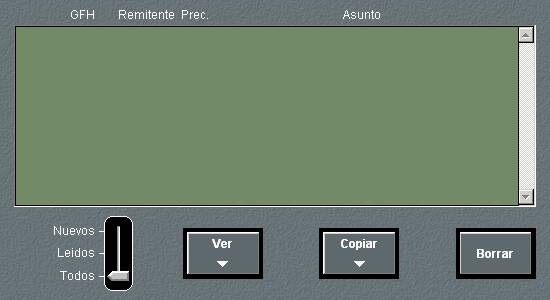
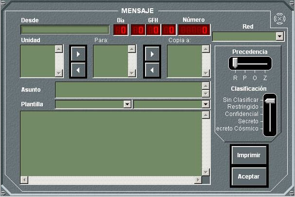

El panel de detalle de Mensajería presenta dos solapas que corresponden a las opciones de configuración del equipo.
En las unidades submarinas solo se puede recibir o transmitir por una red de mensajería si están en superficie o tienen un mástil con antena para la banda correspondiente izado.
Pulsando en la solapa Transmisión, se muestra el siguiente panel de detalle:

En este panel se muestra la lista de los mensajes transmitidos, ordenados de más a menos recientes, indicando el Grupo Fecha Hora, el estado del mensaje (en proceso, transmitiendo, transmitido), la red por la que se transmite, la precedencia y el asunto. En la parte inferior izquierda del panel existe una barra de desplazamiento que permite filtrar la lista mostrando los mensajes en proceso, en transmisión, transmitidos, o todos. Se muestra también la lista de destinatarios del mensaje, en la que se indica el estado de cada una de las unidades destinatarias o informadas del mensaje seleccionado, de forma que se puede saber si una unidad ha recibido o no el mensaje. Cuando una unidad de la lista recibe el mensaje aparece a su derecha la palabra “Ok” y mientras que no lo reciba aparecerá el indicador “->”.
Desde este panel pueden ejecutarse las siguientes acciones:
- Filtrar la lista de mensajes por estado del mismo: En Proceso, Transmitiendo, Transmitidos o Todos.
Cuando se crea un nuevo mensaje (mediante Nuevo, Importar o Copiar), éste aparece como En Proceso en la lista de mensajes mientras que no se envíe. Una vez que se envía el mensaje pasa a estado Transmitiendo y permanecerá en este estado mientras que alguna de las unidades destinatarias o informadas no haya recibido el mensaje. Cuando TODAS las unidades hayan recibido el mensaje, éste pasará a estado Transmitido permaneciendo ya en este estado.
- Enviar un mensaje: Una vez redactado el mensaje, éste puede enviarse pulsando el botón Enviar. El envío se realiza a través de la red que se haya seleccionado en la lista de redes que aparece a la izquierda de dicho botón.
- Borrar un mensaje: Seleccionando un mensaje de la lista, al pulsar el botón Borrar, se procede a la eliminación de dicho mensaje.
- Copiar un mensaje: Seleccionando un mensaje de la lista, al pulsar el botón Copiar, se abre el panel de edición de mensajes con una copia del mensaje seleccionado, que puede modificarse.
- Ver un mensaje: Seleccionando un mensaje de la lista, al pulsar el botón Ver, se abre el panel de edición de mensajes con el mensaje seleccionado. Los mensajes que permanezcan En Proceso pueden ser modificados, mientras que los que tengan estado Transmitiendo o Transmitido no podrán ser modificados
- Escribir un Nuevo mensaje: Al pulsar el botón Nuevo, se abre el panel de edición de mensajes, donde se redacta el nuevo mensaje.
- Importar un mensaje: Al pulsar el botón Importar, se abre un navegador desde donde se puede recuperar un mensaje que haya sido guardado en un fichero de texto previamente. El tamaño máximo del fichero que puede ser importado es de 64 KBytes (configurable en Galeon.ini, hasta un máximo de 100 KBytes). Dentro del fichero de texto, el máximo tamaño de línea debe ser de 1024 bytes.
Pulsando en la solapa Recibidos, se muestra el siguiente panel de detalle

En este panel de mensajes recibidos se muestra la lista de dichos mensajes, ordenados de más a menos recientes, incluyendo el Grupo Fecha Hora, el emisor del mensaje, su precedencia y el asunto. Desde este panel se pueden ejecutar las siguientes acciones:
- Filtrar la lista de mensajes por estado del mismo: Nuevos, Leídos o Todos. Los mensajes pendientes de ser leídos (nuevos) muestran un sobre a la derecha del mismo en la lista.
- Ver un mensaje: Seleccionando un mensaje de la lista, al pulsar el botón Ver, se abre el panel de edición de mensajes con el mensaje seleccionado. En este caso el mensaje no puede modificarse.
- Copiar un mensaje: Seleccionando un mensaje de la lista, al pulsar el botón Copiar, se abre el panel de edición de mensajes con una copia del mensaje seleccionado, que puede modificarse.
- Borrar un mensaje: Seleccionando un mensaje de la lista, al pulsar el botón Borrar, se procede a la eliminación de dicho mensaje.

El panel de edición de mensajes permite la preparación de mensajes para su posterior envío. Para ello se realizan las siguientes acciones:
- Seleccionar Unidad o Unidades destinatarias: De la lista de unidades que aparece a la izquierda se selecciona una por una las unidades destinatarias y se incluyen en la lista de destinatarias “Para:” pulsando en el botón cuya leyenda es una flecha hacia la derecha. Si se desea eliminar alguna unidad de la lista, debe seleccionarse ésta y pulsar el botón cuya leyenda es una flecha hacia la izquierda.
- Seleccionar Unidad o Unidades destinatarias para información: Se procede igual que en el caso de las unidades destinatarias, pero considerando la lista de unidades “Copia a:”.
- Seleccionar la red de mensajería por la que se enviará el mensaje de entre las disponibles para la unidad, es decir, las del plan de frecuencias del bando que estén asignadas a la unidad (ver Manual de Preparación – Preparación de Ejercicios – Frecuencias por Unidad).
- Seleccionar Plantilla para mensaje: seleccionando previamente el tipo de plantilla, podrá escoger entre todas las plantillas introducidas en la base de datos de dicho tipo (ver Manual de Preparación – Base de Datos de Mensajería).
- Escribir un Asunto y un Texto para el mensaje. El texto escrito después del símbolo “//” y hasta el siguiente final de línea se considera comentario y por tanto no es transmitido.
- Seleccionar una Precedencia (Z,O,P,R) y una Clasificación (Sin Clasificación, Restringido, Confidencial, Secreto, Secreto Cósmico) utilizando las barras de desplazamiento correspondientes.
- Imprimir un mensaje: al pulsar el botón Imprimir, se imprime el mensaje en la impresora configurada por defecto.
- Aceptar un mensaje: al pulsar el botón Aceptar, el mensaje pasa a la lista de mensajes en transmisión con el estado “en proceso”.